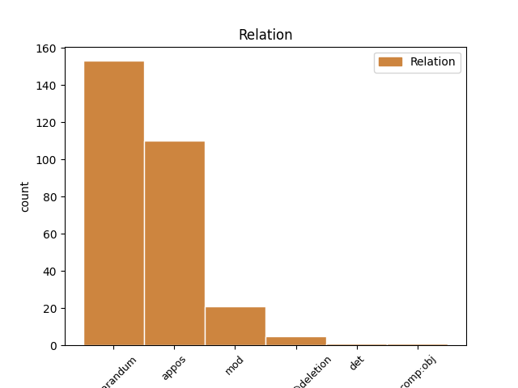
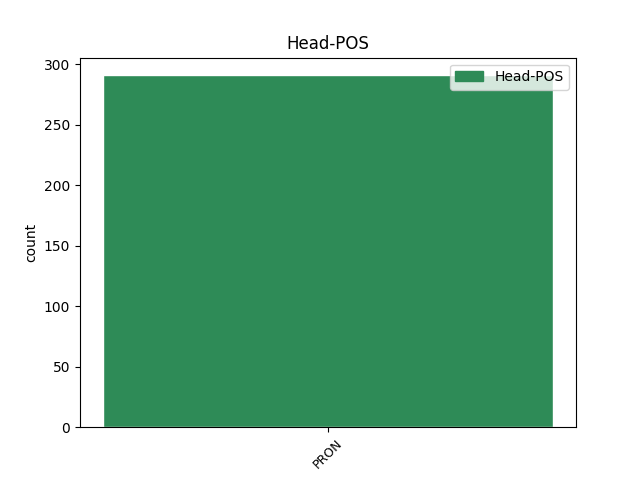
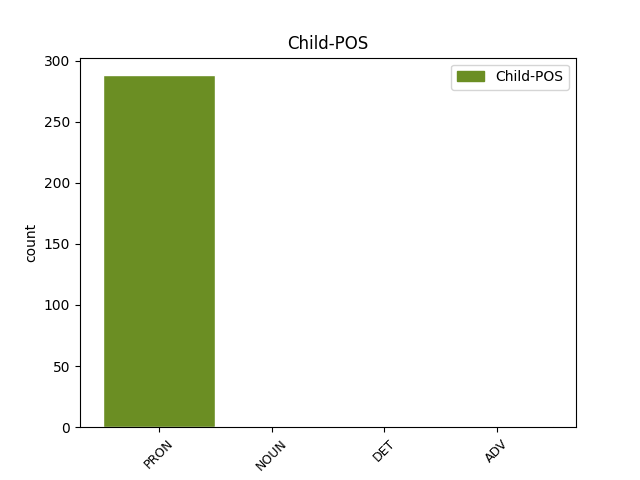

Distribution of features within this leaf



Agreement Rules sorted by frequency.
- When the dependent token is the overridden disfluency(reparandum) of the head token,
1 og _ _ _ _ 0 _ _ _
2 dei dei PRON _ Animacy=Hum|Case=Nom|Number=Plur|Person=3|PronType=Prs 3 reparandum _ _
3 dei dei PRON _ Animacy=Hum|Case=Nom|Number=Plur|Person=3|PronType=Prs 0 _ _ _
4 hadd- _ _ _ _ 0 _ _ _
5 og _ _ _ _ 0 _ _ _
6 da _ _ _ _ 0 _ _ _
7 var _ _ _ _ 0 _ _ _
8 det _ _ _ _ 0 _ _ _
9 oppi _ _ _ _ 0 _ _ _
10 ein _ _ _ _ 0 _ _ _
11 da _ _ _ _ 0 _ _ _
12 var _ _ _ _ 0 _ _ _
13 det _ _ _ _ 0 _ _ _
14 oppi _ _ _ _ 0 _ _ _
15 ein _ _ _ _ 0 _ _ _
16 ni _ _ _ _ 0 _ _ _
17 hundre _ _ _ _ 0 _ _ _
18 kilo _ _ _ _ 0 _ _ _
19 dei _ _ _ _ 0 _ _ _
20 hadde _ _ _ _ 0 _ _ _
21 # _ _ _ _ 0 _ _ _
22 ja _ _ _ _ 0 _ _ _
23 # _ _ _ _ 0 _ _ _
24 det _ _ _ _ 0 _ _ _
25 var _ _ _ _ 0 _ _ _
26 det _ _ _ _ 0 _ _ _
27 . _ _ _ _ 0 _ _ _
1 ja _ _ _ _ 0 _ _ _
2 # _ _ _ _ 0 _ _ _
3 eg _ _ _ _ 0 _ _ _
4 var _ _ _ _ 0 _ _ _
5 # _ _ _ _ 0 _ _ _
6 eg eg PRON _ Animacy=Hum|Case=Nom|Number=Sing|Person=1|PronType=Prs 0 _ _ _
7 var _ _ _ _ 0 _ _ _
8 mykje _ _ _ _ 0 _ _ _
9 i _ _ _ _ 0 _ _ _
10 tømmerskogen _ _ _ _ 0 _ _ _
11 om _ _ _ _ 0 _ _ _
12 vinteren _ _ _ _ 0 _ _ _
13 eg eg PRON _ Animacy=Hum|Case=Nom|Number=Sing|Person=1|PronType=Prs 6 appos _ _
14 # _ _ _ _ 0 _ _ _
15 ja _ _ _ _ 0 _ _ _
16 # _ _ _ _ 0 _ _ _
17 det _ _ _ _ 0 _ _ _
18 var _ _ _ _ 0 _ _ _
19 eg _ _ _ _ 0 _ _ _
20 ## _ _ _ _ 0 _ _ _
21 det _ _ _ _ 0 _ _ _
22 var _ _ _ _ 0 _ _ _
23 eg _ _ _ _ 0 _ _ _
24 ja _ _ _ _ 0 _ _ _
25 . _ _ _ _ 0 _ _ _
1 du du PRON _ Animacy=Hum|Case=Nom|Number=Sing|Person=2|PronType=Prs 4 mod _ _
2 # _ _ _ _ 0 _ _ _
3 seier _ _ _ _ 0 _ _ _
4 du du PRON _ Animacy=Hum|Case=Nom|Number=Sing|Person=2|PronType=Prs 0 _ _ _
5 « _ _ _ _ 0 _ _ _
6 tredje _ _ _ _ 0 _ _ _
7 kvar _ _ _ _ 0 _ _ _
8 mann _ _ _ _ 0 _ _ _
9 » _ _ _ _ 0 _ _ _
10 ? _ _ _ _ 0 _ _ _
1 ja _ _ _ _ 0 _ _ _
2 det det PRON _ Gender=Neut|Number=Sing|Person=3|PronType=Prs 5 parataxis@deletion _ _
3 e _ _ _ _ 0 _ _ _
4 barken _ _ _ _ 0 _ _ _
5 det det PRON _ Gender=Neut|Number=Sing|Person=3|PronType=Prs 0 _ _ _
6 er _ _ _ _ 0 _ _ _
7 det _ _ _ _ 0 _ _ _
8 der _ _ _ _ 0 _ _ _
9 # _ _ _ _ 0 _ _ _
10 det _ _ _ _ 0 _ _ _
11 er _ _ _ _ 0 _ _ _
12 det _ _ _ _ 0 _ _ _
13 der _ _ _ _ 0 _ _ _
14 kalla _ _ _ _ 0 _ _ _
15 vi _ _ _ _ 0 _ _ _
16 for _ _ _ _ 0 _ _ _
17 « _ _ _ _ 0 _ _ _
18 barken _ _ _ _ 0 _ _ _
19 » _ _ _ _ 0 _ _ _
20 altså _ _ _ _ 0 _ _ _
21 . _ _ _ _ 0 _ _ _
1 så _ _ _ _ 0 _ _ _
2 e _ _ _ _ 0 _ _ _
3 # _ _ _ _ 0 _ _ _
4 manna _ _ _ _ 0 _ _ _
5 han _ _ _ _ 0 _ _ _
6 se- _ _ _ _ 0 _ _ _
7 det det PRON _ Gender=Neut|Number=Sing|Person=3|PronType=Prs 0 _ _ _
8 kom _ _ _ _ 0 _ _ _
9 # _ _ _ _ 0 _ _ _
10 opp _ _ _ _ 0 _ _ _
11 dette dette PRON _ Case=Nom|Gender=Neut|Number=Sing|Person=3|PronType=Prs 7 comp:obj _ _
12 der _ _ _ _ 0 _ _ _
13 e _ _ _ _ 0 _ _ _
14 # _ _ _ _ 0 _ _ _
15 denne _ _ _ _ 0 _ _ _
16 steinen _ _ _ _ 0 _ _ _
17 var _ _ _ _ 0 _ _ _
18 # _ _ _ _ 0 _ _ _
19 på _ _ _ _ 0 _ _ _
20 Ålesunds _ _ _ _ 0 _ _ _
21 museum _ _ _ _ 0 _ _ _
22 . _ _ _ _ 0 _ _ _
1 vi _ _ _ _ 0 _ _ _
2 seier _ _ _ _ 0 _ _ _
3 « _ _ _ _ 0 _ _ _
4 leika _ _ _ _ 0 _ _ _
5 » _ _ _ _ 0 _ _ _
6 # _ _ _ _ 0 _ _ _
7 men _ _ _ _ 0 _ _ _
8 trur _ _ _ _ 0 _ _ _
9 sånt sånt DET _ Case=Acc|Gender=Neut|Number=Sing|Person=3|PronType=Prs 10 det _ _
10 det det PRON _ Gender=Neut|Number=Sing|Person=3|PronType=Prs 0 _ _ _
11 var _ _ _ _ 0 _ _ _
12 ikkje _ _ _ _ 0 _ _ _
13 nemnt _ _ _ _ 0 _ _ _
14 i _ _ _ _ 0 _ _ _
15 min _ _ _ _ 0 _ _ _
16 ungdom _ _ _ _ 0 _ _ _
17 . _ _ _ _ 0 _ _ _
Disagree Examples:
1 og _ _ _ _ 0 _ _ _
2 han han PRON _ Case=Nom|Gender=Masc|Number=Sing|Person=3|PronType=Prs 10 reparandum _ _
3 # _ _ _ _ 0 _ _ _
4 føre _ _ _ _ 0 _ _ _
5 jul _ _ _ _ 0 _ _ _
6 og _ _ _ _ 0 _ _ _
7 sånn _ _ _ _ 0 _ _ _
8 så _ _ _ _ 0 _ _ _
9 kunne _ _ _ _ 0 _ _ _
10 eg eg PRON _ Animacy=Hum|Case=Nom|Number=Sing|Person=1|PronType=Prs 0 _ _ _
11 køyre _ _ _ _ 0 _ _ _
12 kvar _ _ _ _ 0 _ _ _
13 einaste _ _ _ _ 0 _ _ _
14 . _ _ _ _ 0 _ _ _
1 ja _ _ _ _ 0 _ _ _
2 det _ _ _ _ 0 _ _ _
3 spørst _ _ _ _ 0 _ _ _
4 # _ _ _ _ 0 _ _ _
5 kva _ _ _ _ 0 _ _ _
6 du _ _ _ _ 0 _ _ _
7 meiner _ _ _ _ 0 _ _ _
8 med _ _ _ _ 0 _ _ _
9 i _ _ _ _ 0 _ _ _
10 # _ _ _ _ 0 _ _ _
11 dei _ _ _ _ 0 _ _ _
12 behøver _ _ _ _ 0 _ _ _
13 iallfall _ _ _ _ 0 _ _ _
14 ikkje _ _ _ _ 0 _ _ _
15 på _ _ _ _ 0 _ _ _
16 daud _ _ _ _ 0 _ _ _
17 og _ _ _ _ 0 _ _ _
18 liv _ _ _ _ 0 _ _ _
19 seie _ _ _ _ 0 _ _ _
20 at _ _ _ _ 0 _ _ _
21 # _ _ _ _ 0 _ _ _
22 nå _ _ _ _ 0 _ _ _
23 skal _ _ _ _ 0 _ _ _
24 eg _ _ _ _ 0 _ _ _
25 snakke _ _ _ _ 0 _ _ _
26 den _ _ _ _ 0 _ _ _
27 dialekten _ _ _ _ 0 _ _ _
28 på _ _ _ _ 0 _ _ _
29 grunn _ _ _ _ 0 _ _ _
30 av _ _ _ _ 0 _ _ _
31 det _ _ _ _ 0 _ _ _
32 at _ _ _ _ 0 _ _ _
33 det det PRON _ Case=Acc|Gender=Neut|Number=Sing|Person=3|PronType=Prs 36 parataxis@deletion _ _
34 eg _ _ _ _ 0 _ _ _
35 # _ _ _ _ 0 _ _ _
36 eg eg PRON _ Animacy=Hum|Case=Nom|Number=Sing|Person=1|PronType=Prs 0 _ _ _
37 flytta _ _ _ _ 0 _ _ _
38 . _ _ _ _ 0 _ _ _
1 så _ _ _ _ 0 _ _ _
2 vidt _ _ _ _ 0 _ _ _
3 som _ _ _ _ 0 _ _ _
4 eg eg PRON _ Animacy=Hum|Case=Nom|Number=Sing|Person=1|PronType=Prs 7 parataxis@deletion _ _
5 e _ _ _ _ 0 _ _ _
6 # _ _ _ _ 0 _ _ _
7 det det PRON _ Gender=Neut|Number=Sing|Person=3|PronType=Prs 0 _ _ _
8 blitt _ _ _ _ 0 _ _ _
9 meg _ _ _ _ 0 _ _ _
10 fortalt _ _ _ _ 0 _ _ _
11 . _ _ _ _ 0 _ _ _
1 gjetsletida _ _ _ _ 0 _ _ _
2 var _ _ _ _ 0 _ _ _
3 ein _ _ _ _ 0 _ _ _
4 god _ _ _ _ 0 _ _ _
5 skole _ _ _ _ 0 _ _ _
6 for _ _ _ _ 0 _ _ _
7 oss vi PRON _ Animacy=Hum|Case=Acc|Number=Plur|Person=1|PronType=Prs 0 _ _ _
8 # _ _ _ _ 0 _ _ _
9 alle alle PRON _ Case=Acc|Number=Plur|Person=3|PronType=Prs,Tot 7 mod _ _
10 # _ _ _ _ 0 _ _ _
11 a- _ _ _ _ 0 _ _ _
12 på _ _ _ _ 0 _ _ _
13 mange _ _ _ _ 0 _ _ _
14 måtar _ _ _ _ 0 _ _ _
15 . _ _ _ _ 0 _ _ _
1 når _ _ _ _ 0 _ _ _
2 vi _ _ _ _ 0 _ _ _
3 hadde _ _ _ _ 0 _ _ _
4 tørna _ _ _ _ 0 _ _ _
5 om _ _ _ _ 0 _ _ _
6 kveldane _ _ _ _ 0 _ _ _
7 og _ _ _ _ 0 _ _ _
8 han han PRON _ Case=Nom|Gender=Masc|Number=Sing|Person=3|PronType=Prs 10 reparandum _ _
9 e _ _ _ _ 0 _ _ _
10 vi vi PRON _ Animacy=Hum|Case=Nom|Number=Plur|Person=1|PronType=Prs 0 _ _ _
11 var _ _ _ _ 0 _ _ _
12 to _ _ _ _ 0 _ _ _
13 der _ _ _ _ 0 _ _ _
14 vi _ _ _ _ 0 _ _ _
15 var _ _ _ _ 0 _ _ _
16 tre _ _ _ _ 0 _ _ _
17 brør _ _ _ _ 0 _ _ _
18 om _ _ _ _ 0 _ _ _
19 den _ _ _ _ 0 _ _ _
20 båten _ _ _ _ 0 _ _ _
21 han _ _ _ _ 0 _ _ _
22 M13 _ _ _ _ 0 _ _ _
23 og _ _ _ _ 0 _ _ _
24 han _ _ _ _ 0 _ _ _
25 M12 _ _ _ _ 0 _ _ _
26 og _ _ _ _ 0 _ _ _
27 han _ _ _ _ 0 _ _ _
28 M14 _ _ _ _ 0 _ _ _
29 . _ _ _ _ 0 _ _ _